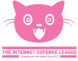
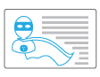

Steps
-

Collectively explore problems and strengths of the open web. What would your life be like without the web? Who made the web? How can you tell the web was made by people?
Introduce the concept of the open web:
- Anyone can use it to make things.
- Transparent, you can see how it is made.
- It doesn’t break because it is not “owned”.
-
Introduce the design challenge:
We benefit from an open web where anyone can use, see and manipulate content on the Internet. Every so often there are things that compromise the open web, such as firewalls, or blocking functionality of web browsers. This is something that can be protected — the perfect job for a team of superheroes.
- 
Have everyone create a superhero identity to protect the open web. The superhero should have a complete profile including a name, picture, superpowers, background story, a nemesis, etc. Don’t forget to have your learners describe how their superheroes protect the open web!
-
Hack into a news site using the X-Ray Goggles to write a story about how the character saved or protected the open web. Put the content on a webpage that was created or hacked and present it to the group at the end of the day.